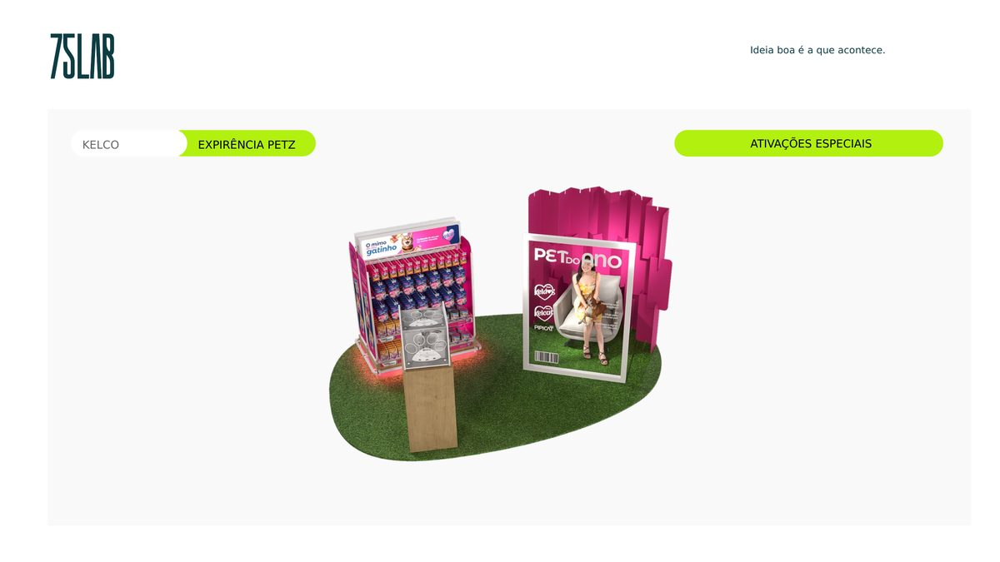
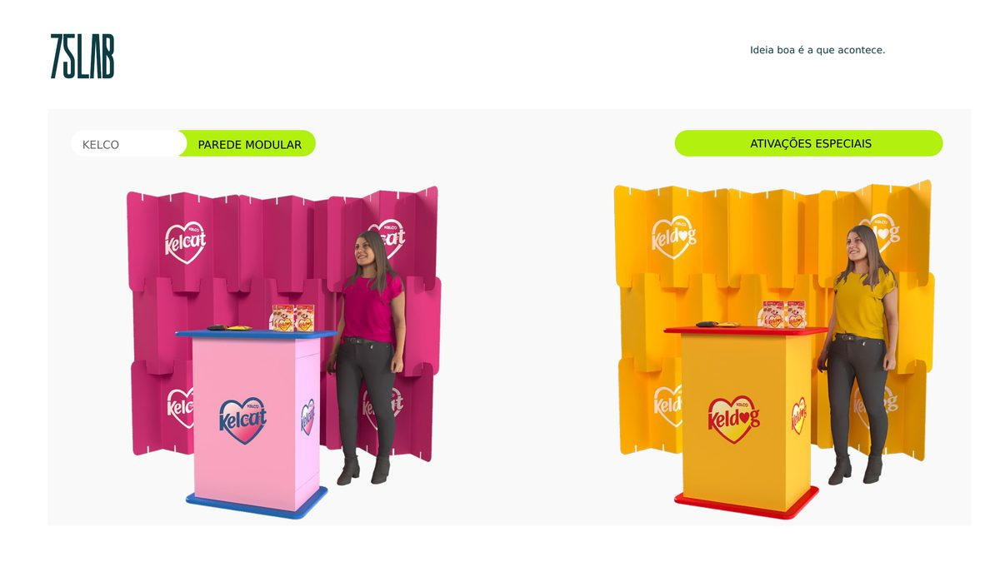
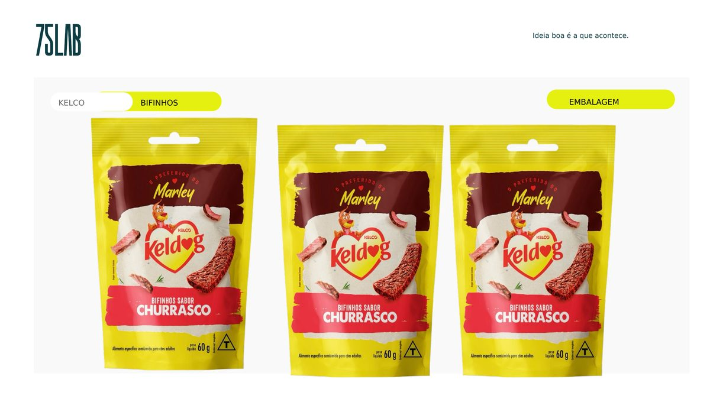
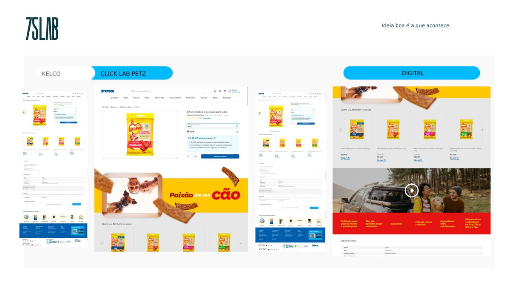

A 75 LAB cria e produz PDV para indústrias pet: displays modulares, pontos de experiência em redes especializadas, enxovais de lançamento, clip strips de petisco e conteúdo rico para o e-commerce. A Kelco, por exemplo, tem displays, parede modular, ponto de experiência na Petz e ClickLab feitos pela 75 LAB.
O que pesa no PDV pet
- Embalagens grandes e pesadas: estrutura e prateleira precisam ser calculadas para o saco cheio, não para o render.
- Pet shop x supermercado: a loja especializada pede experiência e consultoria; o supermercado pede leitura rápida e reposição.
- Petisco é impulso: clip strip e display de balcão perto do caixa e do corredor de ração.
- Online pesa muito: a página de produto do e-commerce também é PDV.
Como a 75 LAB trabalha
- Imersão no produto, no canal e na loja, com o peso e as medidas reais das embalagens.
- Projeto e engenharia, com carga por prateleira e estabilidade conferidas no executivo técnico.
- Aprovação em realidade aumentada, com a peça em tamanho real na gôndola antes de produzir.
- Produção com fornecedores homologados e rastreio por QR depois de instalada.
Pet que já passou por aqui






Perguntas frequentes
Como fazer display para ração pesada?
Com a carga real de cada nível no projeto: peso da embalagem vezes frentes e profundidade, com folga. A prateleira é conferida contra a flecha e o conjunto contra o tombamento, como explica o guia display que não tomba.
O que é um ponto de experiência em pet shop?
É um espaço fora do corredor, temático, onde o tutor conhece e experimenta a marca. Pede cenografia, comunicação da campanha e montagem simples para a equipe da loja.
A 75 LAB faz conteúdo para e-commerce pet?
Sim. O ClickLab é o conteúdo rico da página de produto, com 3D, vídeo e simulação da loja do varejista.